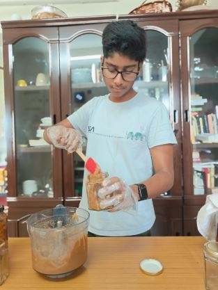

G R O U N D E D
A product of

PUNE, INDIA
PUNE, INDIA
If you read the label on a standard supermarket jar today, you are usually met with a dense paragraph of stabilizers, palm oil, and refined syrups. I take the exact opposite approach. My Simply Seeded peanut butter relies on the quiet power of just three pure elements: deeply roasted peanuts, a pinch of Himalayan pink salt, and your choice of a clean sweetener—monk fruit or date powder. It is my exercise in letting real food speak for itself.
Pure ingredients only matter if the process respects them. The truth is, a jar of Simply Seeded doesn't actually exist until you ask for it. I rejected the traditional warehouse model to run strictly on micro-batches. Your jar is roasted, ground, and packed only after your order drops into my system. It demands a little more patience, but the reward is opening a jar at its absolute peak of freshness.
This standard is not just a rule for my peanut butter—it is the blueprint for my entire kitchen. I am currently applying this exact philosophy to my upcoming lines of wild-fermented Kimchi (ĀCHAR) and slow-brewed Kombucha (Soma). Whether I am crafting a sweet spread, a complex spicy ferment, or a botanical elixir, my promise to you remains uncompromised: fewer ingredients, better sweeteners, and food crafted with absolute integrity.

To be completely honest with you: I used to absolutely hate peanut butter. All of it.
Growing up, my only experience with it was the generic supermarket brands. I found them way too oily, cloyingly sweet, and completely artificial. If you read the label on a standard supermarket jar today, you are met with a dense, confusing paragraph of stabilizers, cheap palm oil, and refined syrups. It feels more like a chemistry lab experiment than breakfast.
That was until I tasted a truly authentic, pure version and realized I had been lied to. I thought to myself: If real peanut butter only requires a couple of pure ingredients, why can't I just make it myself? That single thought sparked an absolute obsession. I started taking over the kitchen, roasting my own peanuts, grinding my own batches, and fine-tuning the texture. When you strip away the junk, it becomes a pure, rich elixir. I completely fell in love with it, and that original kitchen recipe is exactly what I am sharing with you today.
Simply Seeded relies on the quiet power of just three pure elements: deeply roasted peanuts, a pinch of Himalayan pink salt, and your choice of a clean, natural sweetener (monk fruit or date powder). Because I refuse to compromise on freshness, I rejected the traditional warehouse model to run strictly on micro-batches. The truth is, your jar doesn’t actually exist until you ask for it. It is roasted, ground, and packed only after your order drops into my system. It takes a little more time, but the reward is opening a jar at its absolute peak.
Thank you for choosing Simply Seeded.
Our fermentation journey actually began with the massive Korean food craze in India. I was just eight or nine years old, and my family was constantly buying expensive, imported kimchi. Not only was it making a serious impact on our bank account, but the ingredient lists were also packed with weird preservatives.
My older sister took matters into her own hands. After endless kitchen experiments and a few gloriously failed batches, she completely perfected the recipe. It tasted infinitely better than the store-bought jars, saved us a ton of money, and was 100% preservative-free. Now that she’s off at college, the massive and highly stressful responsibility of keeping the family kimchi supply alive has fallen entirely on my shoulders. Today, I'm proud to share her exact, original recipe with you.
But my roots demand equal attention. I am originally from Hyderabad, which means an absolute addiction to authentic South Indian pickles is literally in my DNA. From spicy Avakay to tangy Gongura Pachadi and classic Nimmakaya, these are the bold, handmade flavors I grew up on. While we are starting our launch with Kimchi, I promise you: these rich, traditional Indian flavors will soon be making their way right to your doorstep.
And finally, the classic cucumber pickle. It's a worldwide staple—perfect on burgers, sandwiches, and (if you're truly adventurous) maybe even pizza, though I personally wouldn't recommend it. The problem? Generic market brands are loaded with refined sugar, artificial preservatives, and emulsifiers. I realized that if our kitchen could master complex South Indian spices and Korean lacto-fermentation, there was no excuse not to make a clean, perfectly crunchy American pickle. No junk, just real flavor.
Thank you for choosing ĀCHAR.
Kombucha is controversial—I will be the first to admit it. People either absolutely hate it from the bottom of their hearts, or they love it so much they could practically explode. But before you make your final decision, I just ask that you give ours a try.
It all started when I realized that while packaged cold drinks and sodas taste incredibly good, there has to be a healthier alternative for us. I started researching everywhere. I went to restaurants, cafes, and roadside lemonade stalls looking for the perfect drink. Then, something clicked: sodas are entirely artificial, and I couldn't exactly package fresh roadside lemonade without loading it with chemical preservatives to make it last.
That is when I stumbled across kombucha. I instantly fell in love and started brewing it like my life depended on it. I started with a simple, original tea brew, but quickly realized you don't need artificial laboratory syrups when you can flavor it using real, fresh fruit. I have perfected a whole range of recipes: Original Tea, Mango, Litchi, Ginger, Lemon, and Passion Fruit.
And when I say we use real fruit, I mean it. We source exclusively from organic dealers who sell the absolute highest quality organic produce, taking the necessary time to maintain strict standards of hygiene and quality. It takes endless recipe testing and absolute brain exhaustion just to get the flavor exactly right. Right now, we are busy developing hyper-local and combination flavors like Mango Litchi, Mango Jackfruit, Passion Fruit Lime, Karonda, and Jamun. Very soon, you will be able to pop these authentic beverages right in your fridge, pull one out when it's ice-cold, and drink it completely guilt-free.
Thank you for choosing Soma.
To be honest, I used to absolutely hate peanut butter. All of it.
I found the generic supermarket brands too oily, cloyingly sweet, and completely artificial—and to be frank, I still hate them today. But I realized that real food doesn't need a chemistry lab, and it barely needs a recipe.
I thought to myself: If it only takes a couple of pure ingredients, why can't I just make it myself?
That single thought sparked an obsession. I started roasting and grinding my own batches in my home kitchen, and it sparked a completely different taste. When you strip away the junk, it becomes a pure, rich elixir. I completely fell in love with it. What started as a quest to fix my own breakfast eventually became the foundation for Grounded.
"The only rule I implemented from day one was simple: If it's not healthy enough for my kitchen, it's not going into yours."
— Yog Kota, Founder